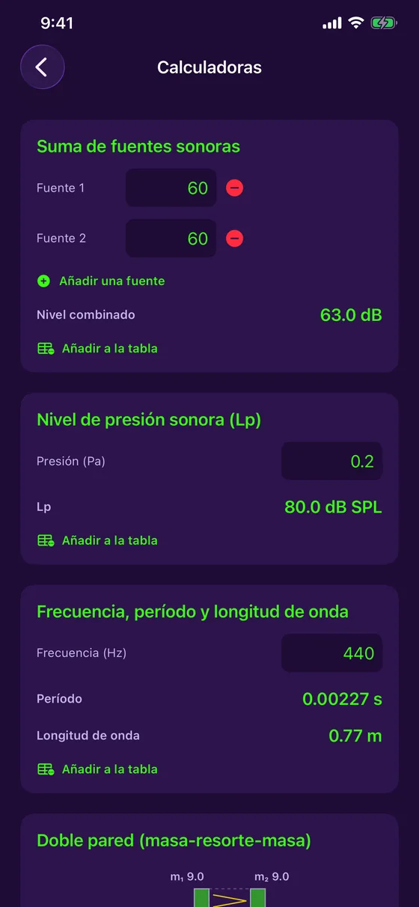

Funciones
Todo lo que necesitas para medir y corregir una sala
El micrófono y la cámara del iPhone, usados para medir, calcular y documentar la acústica de un lugar — sin salir de la app, sin conexión.
Medir
Gratis: lo necesario para medir a diario
Sonómetro en directo
Nivel en dB en tiempo real, con mínimo, media y máximo, y dos estilos de gráfico (Festival, Estudio).
Calibración del micrófono
Compara con un sonómetro de referencia y ajusta: cada medición indica si está calibrada o estimada.
Analizador de espectro
Análisis de frecuencias en directo (FFT) y clasificación del sonido: puro, complejo o ruido.
Tono puro
Para un tono puro, la frecuencia, el periodo y la longitud de onda se calculan por ti.
Historial en colores
Cada sesión se guarda con su curva: verde, amarillo o rojo según el nivel.
Tabla de mediciones
El registro de todas tus mediciones, con filtro, orden y exportación a informe PDF con gráficos.
En detalle
Cada herramienta, de cerca
Afinador
Afina de oído, o deja que la aguja lo haga.
- Guitarra (5 afinaciones), ukelele (incluido sol grave y barítono), violín, viola, violonchelo, mandolina y banjo
- Modo cromático para la voz y cualquier nota
- Aguja con cents en directo y una escala de ajuste fino de ±10 cents, con vibración cuando está afinado
- Lectura estabilizada que ignora las medidas erráticas, con indicador del nivel de la señal
- Frecuencia de referencia ajustable de 430 a 450 Hz, y gratis

Sonómetro, calibración e historial
El sonómetro más sencillo de abrir sobre el terreno.
- Nivel en directo, mínimo, media y máximo
- Calibración del micrófono con un instrumento de referencia, con el estado de calibración anotado en cada medición
- Historial de sesiones con su curva en colores
- Comparte la imagen o añádela a la tabla de mediciones

Reverberación por frecuencia
Saber dónde tiene problemas la sala, no solo si los tiene.
- RT60 por banda de octava, de 125 Hz a 4 kHz, frente al objetivo de tu uso (oficina, estudio, sala de reuniones, cine en casa)
- Las bandas por encima del objetivo se señalan, con un consejo para los graves
- Curvas de absorción de cada material de la sala, entre 10 materiales
- Modelo de Sabine y coeficientes típicos: una estimación orientativa

Del escaneo a la espuma que añadir
Escanea la sala y deja que la app haga los cálculos.
- En un iPhone Pro (LiDAR), un barrido rellena las dimensiones y la superficie de cada pared
- Sin LiDAR, introduce las dimensiones a mano: todo lo demás funciona
- Esquema 3D isométrico de la sala, incluido en la tabla y el informe PDF
- La cantidad de espuma acústica que añadir para alcanzar el objetivo
- Medición del RT60 en directo con una breve ráfaga de ruido

Mapa de ruido
Ver dónde hay ruido en una sala de un vistazo.
- Toca el plano de la sala y mide cinco segundos en cada punto
- Mapa de calor de las zonas tranquilas y ruidosas
- Nivel más tranquilo, media (Leq) y nivel más ruidoso
- Guardado en la tabla de mediciones y en el informe PDF

Calculadoras acústicas
Las fórmulas del oficio, sin papel ni calculadora.
- Suma de fuentes sonoras: cuántos dB en conjunto
- Nivel de presión acústica a partir de la presión en pascales
- Frecuencia, periodo y longitud de onda
- Cada resultado se añade a la tabla con un toque

Doble tabique
Estimar el aislamiento de un tabique antes de construirlo.
- Cálculo masa-resorte-masa a partir de la masa de cada hoja y la profundidad de la cámara
- Frecuencia de resonancia y aislamiento por banda de octava
- Con o sin lana mineral, y hojas desolidarizadas como opción
- Estimación orientativa, no un índice Rw/STC certificado

Tabla de mediciones e informes PDF
Todo lo que mides queda ordenado y se puede compartir.
- Cada medición se añade a una tabla central, filtrable por tipo
- Informe PDF con gráficos y esquema 3D de la sala
- Guarda un gráfico en Fotos o compártelo con las herramientas de iOS
- Todo se queda en tu dispositivo: sin cuenta, sin servidor

Gratis o Acoustic Detector Completo
| Gratis | Completo | |
|---|---|---|
| Sonómetro en directo y calibración | ✓ | ✓ |
| Analizador de espectro | ✓ | ✓ |
| Afinador | ✓ | ✓ |
| Tabla de mediciones y exportación a PDF | ✓ | ✓ |
| RT60 de la sala y espuma que añadir | — | ✓ |
| RT60 por banda de octava y absorción | — | ✓ |
| Escáner LiDAR de la sala | — | ✓ |
| Mapa de ruido | — | ✓ |
| Calculadoras y doble tabique | — | ✓ |
«Acoustic Detector Completo» es una compra única de 4,99 $ CA, sin suscripción.
¿Listo para escuchar tu sala?
Acoustic Detector está disponible en el App Store, para iPhone. Gratis, con una compra única opcional.
Descargar en el App Store